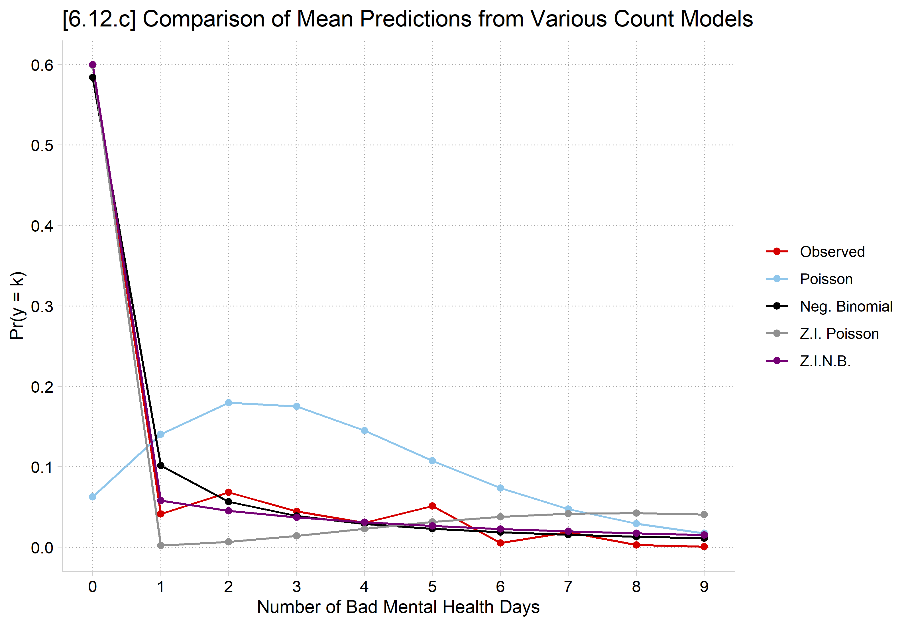

library(haven) # import Stata data and labels
library(dplyr) # data manipulation
library(tidyr) # reshape data: pivot_longer()
library(ggplot2) # graphs
library(MASS) # negative binomial: glm.nb()
library(pscl) # zero-inflated models: zeroinfl()
library(cleanplots) # graph scheme
cleanplots_defaults()
source("https://raw.githubusercontent.com/tdmize/Rfunctions/main/Count_helper_functions.R")
gss <- read_dta("https://tdmize.github.io/data/data/cda_gss.dta")
gss <- gss |> filter(year >= 2002 & year <= 2014)
# Data management: Christian (Protestant, Catholic, Christian) vs not religious
gss <- gss |>
mutate(notrelig = case_when(relig %in% c(1, 2, 11) ~ 0, relig == 4 ~ 1))
# Keep model variables; drop any missing data
gss <- gss[c("mntlhlth", "physhlth", "woman", "race3", "year", "college", "parent",
"faminc", "metro", "notrelig", "married", "age")]
gss <- gss[complete.cases(gss), ]
# Treat binary/nominal variables as factors
gss <- gss |>
mutate(across(c(woman, married, race3, college, parent), as_factor),
notrelig = factor(notrelig, labels = c("Christian", "Not Religious")),
year = factor(year))
# 6.12.c - compare predictions to choose model
count_f <- mntlhlth ~ woman + married + poly(age, 2) + poly(faminc, 2) + race3 + college +
parent + notrelig + year
zero_f <- mntlhlth ~ woman + married + poly(age, 2) + poly(faminc, 2) + race3 + college +
parent + notrelig + year |
woman + married + poly(age, 2) + faminc + race3 + college + parent + notrelig + year
pmod <- glm(count_f, family = "poisson", data = gss)
nbmod <- glm.nb(count_f, data = gss)
zipmod <- zeroinfl(zero_f, data = gss, dist = "poisson")
zinbmod <- zeroinfl(zero_f, data = gss, dist = "negbin")
# Observed proportions and average predicted probabilities of 0 to 9 days
meanpred <- data.frame(k = 0:9) |>
mutate(Observed = sapply(k, function(j) mean(gss$mntlhlth == j)),
Poisson = sapply(k, function(j) mean(dpois(j, fitted(pmod)))),
"Neg. Binomial" = sapply(k, function(j)
mean(dnbinom(j, size = nbmod$theta, mu = fitted(nbmod)))),
"Z.I. Poisson" = colMeans(predict(zipmod, type = "prob", at = 0:9)),
"Z.I.N.B." = colMeans(predict(zinbmod, type = "prob", at = 0:9))) |>
pivot_longer(-k, names_to = "model", values_to = "pr") |>
mutate(model = factor(model, levels = unique(model)))
ggplot(meanpred, aes(x = k, y = pr, color = model)) +
geom_line() + geom_point() +
scale_x_continuous(breaks = 0:9) +
scale_y_continuous(breaks = seq(0, .6, .1), limits = c(0, .6)) +
labs(title = "[6.12.c] Comparison of Mean Predictions from Various Count Models",
x = "Number of Bad Mental Health Days", y = "Pr(y = k)", color = NULL)